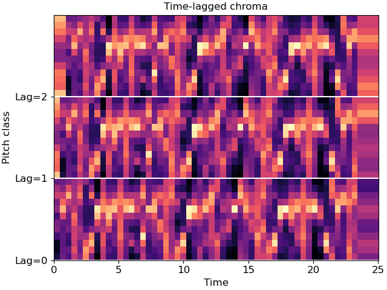

Caution
You're reading an old version of this documentation. If you want up-to-date information, please have a look at 0.9.1.
librosa.feature.stack_memory¶
- librosa.feature.stack_memory(data, n_steps=2, delay=1, **kwargs)[source]¶
Short-term history embedding: vertically concatenate a data vector or matrix with delayed copies of itself.
Each column
data[:, i]is mapped to:data[:, i] -> [data[:, i], data[:, i - delay], ... data[:, i - (n_steps-1)*delay]]
For columns
i < (n_steps - 1) * delay, the data will be padded. By default, the data is padded with zeros, but this behavior can be overridden by supplying additional keyword arguments which are passed to np.pad().- Parameters
- datanp.ndarray [shape=(d, t)]
Input data matrix. If
datais a vector (data.ndim == 1), it will be interpreted as a row matrix and reshaped to(1, t).- n_stepsint > 0 [scalar]
embedding dimension, the number of steps back in time to stack
- delayint != 0 [scalar]
the number of columns to step.
Positive values embed from the past (previous columns).
Negative values embed from the future (subsequent columns).
- kwargsadditional keyword arguments
Additional arguments to pass to
numpy.pad
- Returns
- data_historynp.ndarray [shape=(m * d, t)]
data augmented with lagged copies of itself, where
m == n_steps - 1.
Notes
This function caches at level 40.
Examples
Keep two steps (current and previous)
>>> data = np.arange(-3, 3) >>> librosa.feature.stack_memory(data) array([[-3, -2, -1, 0, 1, 2], [ 0, -3, -2, -1, 0, 1]])
Or three steps
>>> librosa.feature.stack_memory(data, n_steps=3) array([[-3, -2, -1, 0, 1, 2], [ 0, -3, -2, -1, 0, 1], [ 0, 0, -3, -2, -1, 0]])
Use reflection padding instead of zero-padding
>>> librosa.feature.stack_memory(data, n_steps=3, mode='reflect') array([[-3, -2, -1, 0, 1, 2], [-2, -3, -2, -1, 0, 1], [-1, -2, -3, -2, -1, 0]])
Or pad with edge-values, and delay by 2
>>> librosa.feature.stack_memory(data, n_steps=3, delay=2, mode='edge') array([[-3, -2, -1, 0, 1, 2], [-3, -3, -3, -2, -1, 0], [-3, -3, -3, -3, -3, -2]])
Stack time-lagged beat-synchronous chroma edge padding
>>> y, sr = librosa.load(librosa.ex('choice')) >>> chroma = librosa.feature.chroma_stft(y=y, sr=sr) >>> tempo, beats = librosa.beat.beat_track(y=y, sr=sr, hop_length=512) >>> beats = librosa.util.fix_frames(beats, x_min=0, x_max=chroma.shape[1]) >>> chroma_sync = librosa.util.sync(chroma, beats) >>> chroma_lag = librosa.feature.stack_memory(chroma_sync, n_steps=3, ... mode='edge')
Plot the result
>>> import matplotlib.pyplot as plt >>> fig, ax = plt.subplots() >>> beat_times = librosa.frames_to_time(beats, sr=sr, hop_length=512) >>> librosa.display.specshow(chroma_lag, y_axis='chroma', x_axis='time', ... x_coords=beat_times, ax=ax) >>> ax.set(yticks=[0, 12, 24], yticklabels=['Lag=0', 'Lag=1', 'Lag=2'], ... title='Time-lagged chroma') >>> ax.hlines([0, 12, 24], beat_times.min(), beat_times.max(), color='w')
